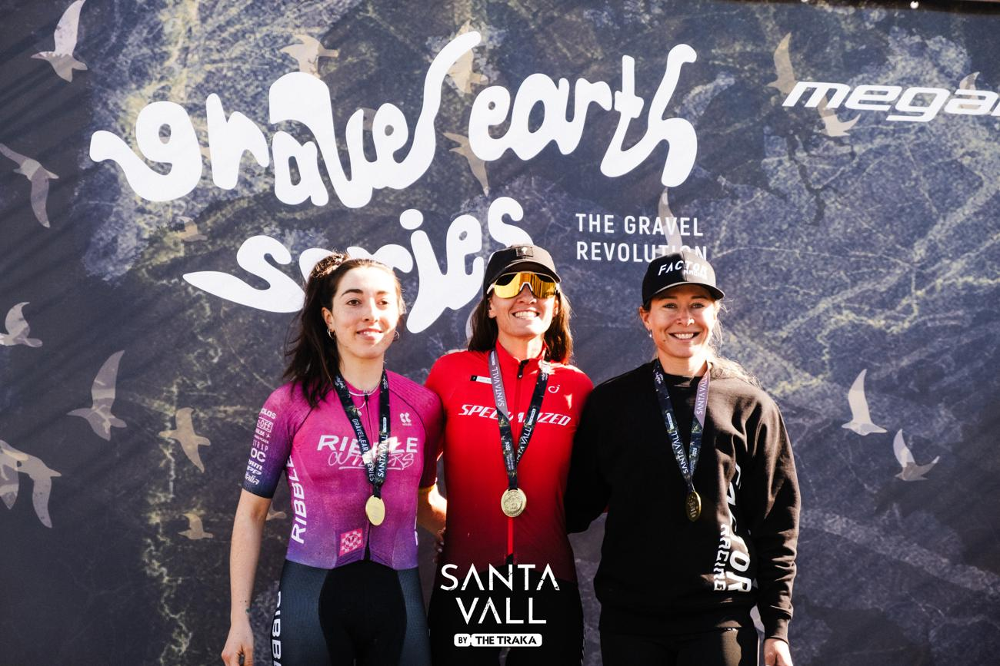
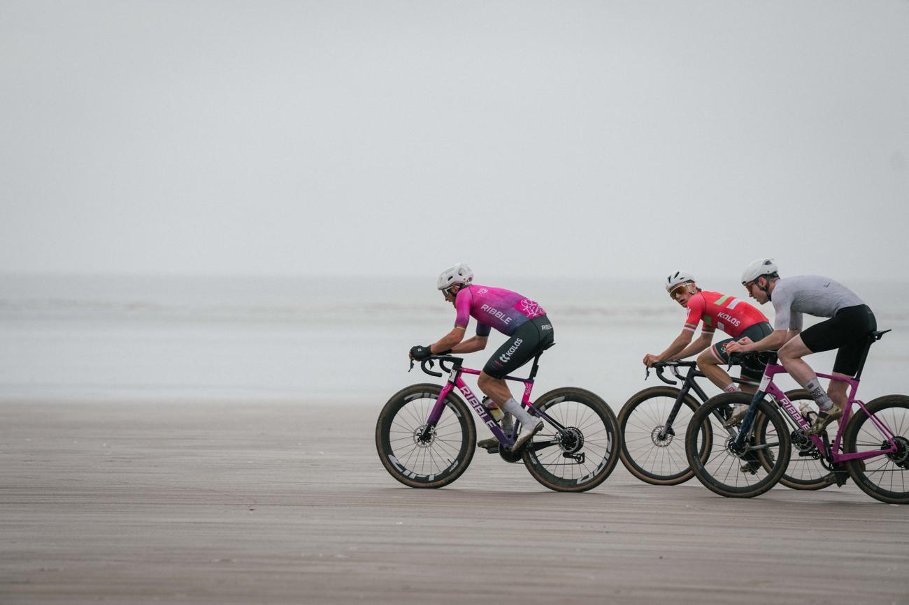

Back the Outliers in 2027
A British gravel team with two reigning National Champions, two UCI Gravel World Series wins in 2026, and a channel the sport’s fastest-growing audience already follows.
Start the conversationA British gravel team with two reigning National Champions, two UCI Gravel World Series wins in 2026, and a channel the sport’s fastest-growing audience already follows.
Start the conversationProfessional gravel is mid-way through a structural shift. The privateer model that defined the field three years ago is breaking, and team-based racing is taking its place.
The clearest signal came at Unbound Gravel 200. Keegan Swenson and Mads Würtz Schmidt broke clear for Specialized Off-Road, Schmidt punctured with 75 miles to go, and Swenson handed over his own wheel so his teammate could ride on to the win.
For a brand, the timing matters. A structured gravel team today costs a fraction of an equivalent road programme, and it reaches an audience that traditional cycling has struggled to add.
Cyclingnews, Unbound Gravel 200 race report, 2026

Jenson Young and Sophie Wright are confirmed for 2027, and both are reigning British National Champions. Around them, a five-rider squad with a professional crew.


Podiums and gold at UCI and Gravel Earth level in both the men’s and the women’s categories, capped by a British National Championship double in August.


Five riders. Jenson and Sophie confirmed as the core, both reigning British National Champions.
Three further riders join against the calendar, chosen to support the leads rather than compete with them.
A European UCI Gravel World Series core with a selective UK national programme keeping the team visible at home.
Partners see the calendar before it locks, and activation events can be built into it.
A Team Principal on location, a dedicated mechanic, a soigneur at UCI weekends, contracted coaching for the leads.
A content manager owns central output, so partner stories ship all season.
Gravel is the fastest-growing space in cycling, and the Outliers pair a results-proven team with a channel that reaches the audience brands want. For 2027 we are opening one headline partnership and a small category 2 group.
Every partnership is built around activation, with defined deliverables per tier and quarterly reporting, so the return is visible inside the contract year.
The full 2027 programme and partnership detail are ready to walk through. Tell us who you are and we will come back to you the same day.
partnerships@ribble.com